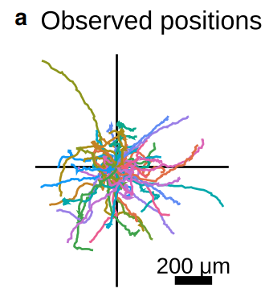
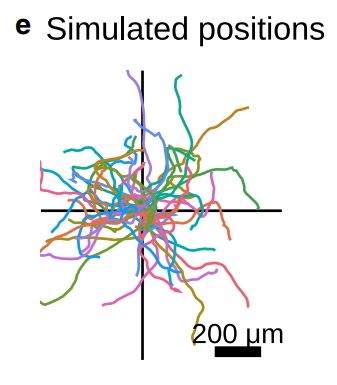
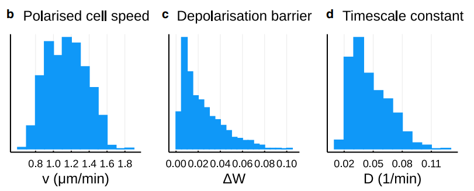
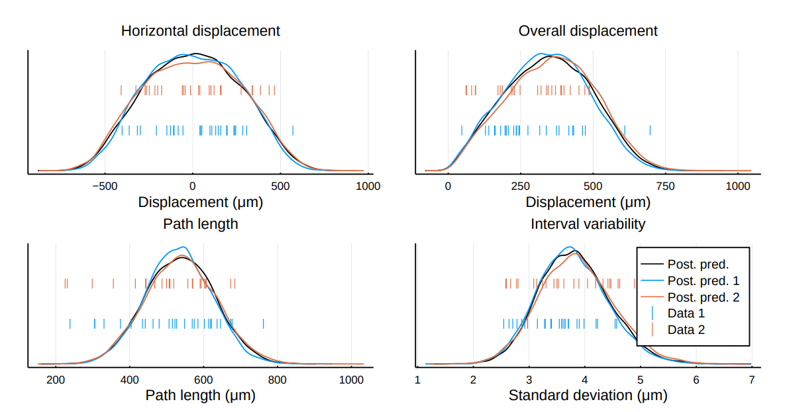

Dr Thomas Prescott
3rd Feb 2022
Work in collaboration with Prof Ruth Baker (Oxford) and Prof Min Zhao and Dr Kan Zhu (UC Davis).
Published in Biophysical Journal (2021).
Modelling framework based on the overdamped regime, reviewed in Camley and Rappel (2017).
For each cell $i \in \mathcal I$ we equate friction, \[ \gamma \dydx{\pos_i}{t} = \Fact_i + \Fcc_i, \] with the sum of active and cell-cell interaction forces.
Pairwise interactions modelled by a potential $V$, \[ \Fcc_i = - \pdydx{~}{\pos_i} \frac{1}{2} \sum_{j \neq i} V(|\pos_i - \pos_j|) \] with mid-range attraction and short-range repulsion.
Arises from polarity, which is modelled as an auxiliary (nondimensional) variable, $\pol_i$.
The direction the cell would "like" to move in.
$\Fact_i \propto \pol_i$.
The polarity is modelled to have its own dynamics.
\[\d \pos(t) = \Fact(t) \d t = v \pol(t) \d t\]
What is the characteristic cell speed, $v~\mathrm{\mu m / min}$?
What are the dynamics of $\pol$?
\[\d \pos(t) = \Fact(t) \d t = v \pol(t) \d t\]
\[ \d \pol(t) = -D \nabla W(\pol(t)) \d t + \sqrt{2D} \d \mathbf B(t) \]
What is the characteristic cell speed, $v~\mathrm{\mu m / min}$?
What is the timescale parameter, $D~\mathrm{min}^{-1}$?
What is the potential function, $W$?
\[\d \pos(t) = \Fact(t) \d t = v \pol(t) \d t\]
\[ \d \pol(t) = -D \nabla W(\pol(t)) \d t + \sqrt{2D} \d \mathbf B(t) \]
\[W(\pol) = \beta \left( \frac{1}{4} |\pol|^4 - \frac{1}{2} |\pol|^2 \right) \]
What is the characteristic cell speed, $v~\mathrm{\mu m / min}$?
What is the timescale parameter, $D~\mathrm{min}^{-1}$?
What is the energy barrier, $\Delta W = \beta/4$?
What is the characteristic cell speed, $v~\mathrm{\mu m / min}$?
What is the timescale parameter, $D~\mathrm{min}^{-1}$?
What is the energy barrier, $\Delta W = \beta/4$?
Comparing simulations with observations:
 Simulated trajectories above were using parameter vectors drawn from a calibrated distribution:
Key is summary statistics that make data space suitably low-dimensional:
EG sampler: Markov Chain Monte Carlo. Others exist!
Stationary distribution of chain is an approximate posterior distribution in parameter space.